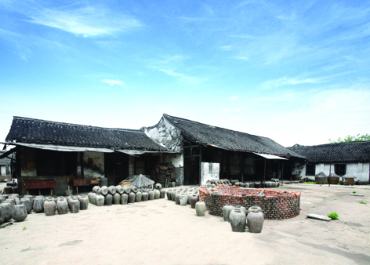

嘉兴市文物保护网 · 市级文物保护单位 · 2014-06-17 · 原文

高公兴酱园旧址位于嘉兴市秀洲区新塍镇西南大街233号，由高氏祖先高景涵创立于清乾隆三十三年（1768）。坐南朝北，门面隔街临河而建，占地面积1063平方米。主要生产经营硬壳糟蛋、黄酒、酱萝卜等传统土特产。现仅存门楼、门市经营部、账房、住房及仓库等建筑。其中门市经营部系二层三开间砖木结构建筑，木构件用材较大，梁枋雕饰精美纹饰。门市经营部南侧为账房，亦系二层三开间砖木结构建筑。仓库则坐北朝南，系三开间五架抬梁式建筑。1956年实行公私合营，高公兴与张恒昌、大生、东公兴、东恒隆等私营酱园合并为新塍酿造总厂，上世纪八十年代后恢复“高公兴”老字号并对外经营。作为嘉兴地区有较大影响力的传统土特产作坊，高公兴酱园虽然建筑面貌保存一般，但历经二百多年尚存至今亦属稀少，弥足珍贵，并具有较高的历史价值。2009年公布为嘉兴市级文物保护单位。